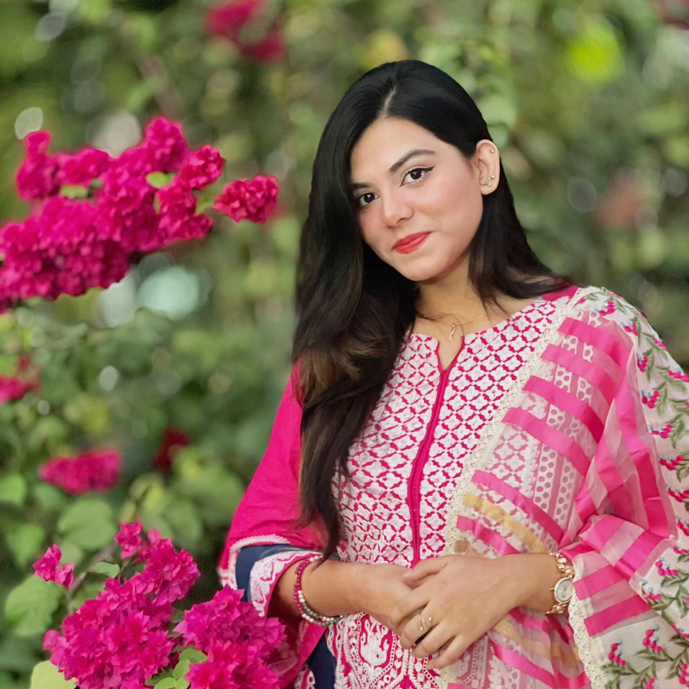

Jarin Anan Jasia
An Aspiring Engineer
About Me
My name is Jarin Anan Jasia, and I am an aspiring engineer currently pursuing my BSc in Computer Science and Engineering at Bangladesh University of Professionals (BUP). I completed my PSC (2013), JSC (2016), SSC (2019), HSC (2021) from KAFCO School & College with GPA-5.00. I was born on April 14th and I come from Chittagong. Currently, I reside in Mirpur DOHS, Dhaka-1216, Bangladesh, where I am focused on my studies and work. I possess a strong passion for technology and innovation. My inquisitive nature drives me to explore complex problems and find creative solutions. I am known for my collaborative and communicative approach. I have ability to adapt to new challenges and deliver high-quality results.
Skills
- C, C++
- Java
- Assembly Language
- SQL
- DBMS
- CapCut
- Singing
- Anchoring
- HTML, CSS, JS
Projects
- BUP SHUTTLE COMPANION (Java): GitHub Repository
- Gas Leakage Project with Arduino : GitHub Repository
Experience
- Volunteer at IICT 2024, IEEE 2023
- Member of BUP Robotics, ICT, and Programming clubs.
- Member of KAFCO School & College Music Club.
Certifications & Awards
- Best Singer Award in the University's Anual Picnic - 2024
- Best Singer Award in the University's Anual Picnic - 2023
Contact
Facebook: Jarin Anan Jasia
LinkedIn: Jarin Anan Jasia
Email: zarinananajasia@gmail.com
Snapchat: jasa ✨
Instagram: jarin_anan_jasia
Blog
🌟 I believe in turning dreams into reality. As a proud Muslim, I value compassion and kindness above all else. I have always been fascinated by the power of love and the transformative power of the human spirit. My blog aims to share my experiences, thoughts, and inspirations with others who are also seeking to make a difference in the world through their skills, knowledge, and passion. I hope you enjoy reading my blog and find it to be a valuable resource for your own growth and development. Thank you for visiting my blog and I look forward to hearing from you soon.